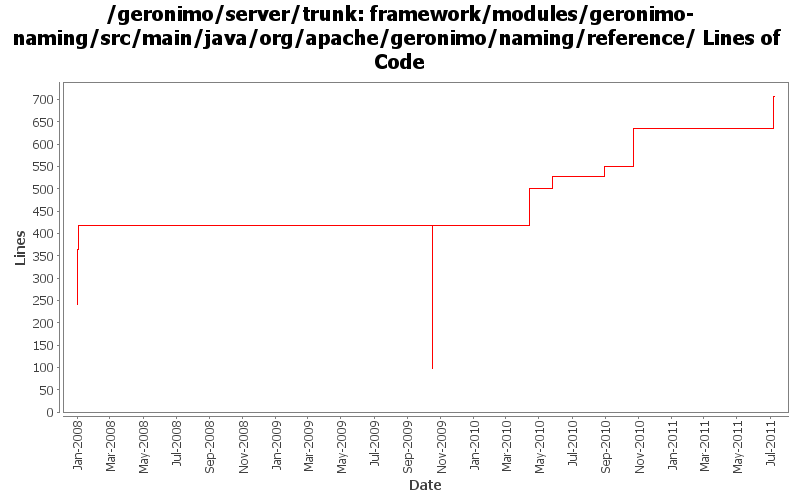

[root]/framework/modules/geronimo-naming/src/main/java/org/apache/geronimo/naming/reference

| Author | Changes | Lines of Code | Lines per Change |
|---|---|---|---|
| Totals | 37 (100.0%) | 863 (100.0%) | 23.3 |
| djencks | 18 (48.6%) | 524 (60.7%) | 29.1 |
| gawor | 6 (16.2%) | 221 (25.6%) | 36.8 |
| xuhaihong | 5 (13.5%) | 116 (13.4%) | 23.2 |
| jlaskowski | 4 (10.8%) | 2 (0.2%) | 0.5 |
| kevan | 2 (5.4%) | 0 (0.0%) | 0.0 |
| hanhongfang | 2 (5.4%) | 0 (0.0%) | 0.0 |
GERONIMO-6058 Replace StringBuffer usage with StringBuilder
1 lines of code changed in 1 file:
GERONIMO-6045 Support artifact alias for ResourceReference and JndiReference
71 lines of code changed in 2 files:
a. Make the persistence unit/context query be compatible for both client and server side
b. ConfigurationAwareReference could work without no artifact id
17 lines of code changed in 1 file:
give appclient in ear another chance to get its configuration
0 lines of code changed in 2 files:
GERONIMO-5659: Inject Bundle or BundleContext using @Resource annotation
86 lines of code changed in 2 files:
GERONIMO-434 for ee jndi go back to getting the connection factory each time from the connection manager since osgi jndi caches the connection factory for us
28 lines of code changed in 2 files:
add a missing class in last commit
27 lines of code changed in 1 file:
JndiReference does not need to be aware
1 lines of code changed in 1 file:
GERONIMO-5251: Support environment entires of type Class or Enum
83 lines of code changed in 2 files:
GERONIMO-4916 step 2 move sandbox osgi framework into trunk
320 lines of code changed in 6 files:
GERONIMO-4916 step 1 remove old framwork
0 lines of code changed in 6 files:
Fix old-style source license headers to use the current source license header format
0 lines of code changed in 2 files:
header fixes (Rev, Date)
2 lines of code changed in 4 files:
moved generic ResourceReference.java and ResourceReferenceFactory.java to geronimo-naming module from geronimo-connector module
52 lines of code changed in 2 files:
GERONIMO-3718 experimental patch to speed up resource-refs.
175 lines of code changed in 3 files: